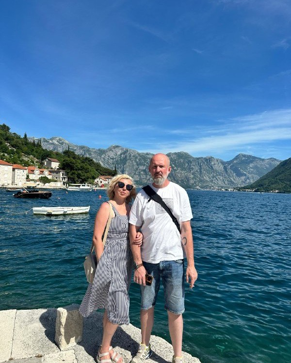
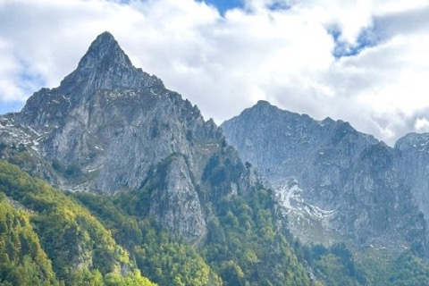
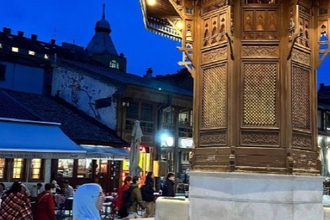
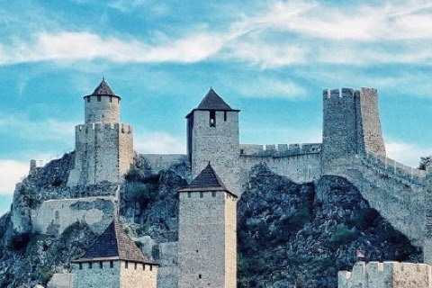
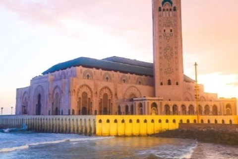

Побег от жары на Копаоник
Вечером +14, днём не выше +23. И море черники. Чистые горные реки, водопады, густые еловые леса. А воздух хоть ложкой ешь.
Читать в Threads →Сербия · Черногория · Босния и Герцеговина · Марокко · Грузия
Авторские туры небольшими группами
Мы живём в Сербии и показываем Балканы так, как показывали бы друзьям: горные дороги без спешки, кофе в джезве в старой кафане, сыр с рынка, крепости, реки и споменики, о которых не пишут в путеводителях.
Кто мы
Мы не турагентство. Мы соседи, которые знают, где в этой долине варят лучший кофе, — и зовут вас с собой.

Привет! Мы — Алексей и Лариса, живём в Сербии, обожаем Балканы: людей, природу, кухню. И знакомим наших путешественников с прекрасными Балканами 💚
За несколько лет мы проехали эти горы вдоль и поперёк: от изумрудных рек Боснии до пляжей Ульциня, от османских базаров Нови-Пазара до футуристичных спомеников, которые выглядят как декорации к фильмам о далёких галактиках.
Вкусно — это не только про еду. Это про темп, разговоры и дорогу, на которой не хочется смотреть на часы.
Каждый маршрут мы собираем сами и сами же его ведём. Никаких автобусов на пятьдесят человек, флажков и «десять минут на фото».
Не десять городов за неделю. Лучше один перевал, но с остановкой у реки и обедом там, где едят местные.
Кафаны вместо ресторанов при отелях, рынки, домашние сыры и вино у хозяина погреба.
8–12 человек. Помещаемся за один стол, слышим друг друга и умеем менять план из-за красивого света.
Крепости, монастыри, каньоны и споменики — Балканы, которые не помещаются в стандартный путеводитель.
Ближайшие маршруты
Места ограничены составом группы. Бронь и вопросы — в Telegram, отвечает Лариса.

Национальный парк Проклетие, пляжи Ульциня и Скадарское озеро. Горы, море и вода одного маршрута.
Мест нет
Сараево, крепости Яйце и Травника, изумрудные реки и джип-сафари по горным дорогам.
Осталось 3 места
Крепость Голубац, круиз по Дунаю и самый высокий наскальный памятник Европы.
Есть места
Медины Феса, сады Марракеша и Сахара. Не Балканы — но по тем же правилам: медленно и со вкусом.
Осталось 2 местаВ октябре — короткие маршруты по Сербии на выходные. Даты объявим в канале.
Забронировать местоЖурнал
Заметки из поездок — то же, что мы пишем в Threads и Telegram.
Вечером +14, днём не выше +23. И море черники. Чистые горные реки, водопады, густые еловые леса. А воздух хоть ложкой ешь.
Читать в Threads →Пока весь мир ставил классические памятники с вождями и солдатами, здесь строили футуристичные объекты: крылья, цветы, звёзды. Мы включаем их в маршруты.
Читать в Threads →Шумный базар, деревянный фонтан, кофе в джезве и чай по-турецки. Мечеть XVI века, старейший православный храм Сербии и развалины первой столицы из списка ЮНЕСКО.
Читать в Threads →Связаться
Напишите — расскажем про маршрут, уровень сложности, жильё и что взять с собой. Без скриптов и менеджеров: отвечаем мы сами.